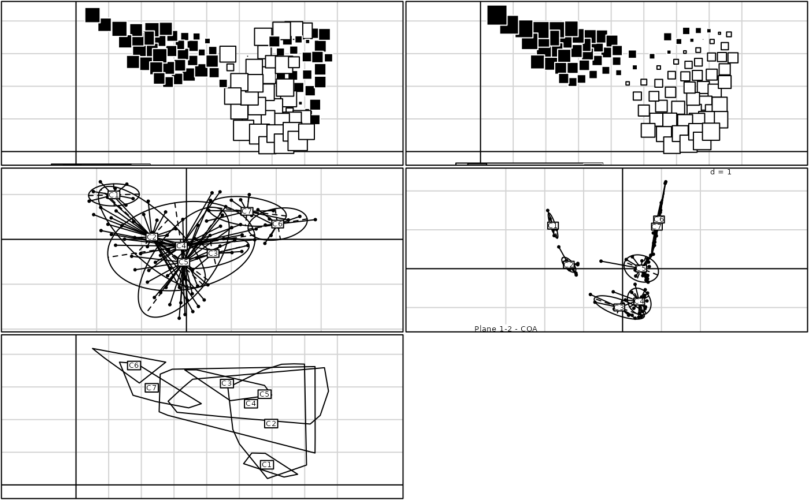

Phyto-Ecological Survey
mafragh.RdThis data set gives environmental and spatial informations about species and sites.
Usage
data(mafragh)Format
mafragh is a list with the following components:
- xy
the coordinates of 97 sites
- flo
a data frame with 97 sites and 56 species
- env
a data frame with 97 sites and 11 environmental variables
- partition
a factor classifying the 97 sites in 7 classes
- area
a data frame of class
area- tre
a character providing the phylogeny as a newick object
- traits
a list of data frame. Each data frame provides the value of biological traits for plant species
- nb
the neighbourhood graph of the 97 Mafragh sites (an object of class
nb)- Spatial
the map of the 97 Mafragh sites (an object of the class
SpatialPolygonsofsp)- spenames
a data frame with 56 rows (species) and 2 columns (names)
- Spatial.contour
the contour of the Magragh map (an object of the class
SpatialPolygonsofsp)
Source
de Bélair, Gérard and Bencheikh-Lehocine, Mahmoud (1987) Composition et déterminisme de la végétation d'une plaine côtière marécageuse : La Mafragh (Annaba, Algérie). Bulletin d'Ecologie, 18(4), 393–407.
Pavoine, S., Vela, E., Gachet, S., de Bélair, G. and Bonsall, M. B. (2011) Linking patterns in phylogeny, traits, abiotic variables and space: a novel approach to linking environmental filtering and plant community assembly. Journal of Ecology, 99, 165–175. doi:10.1111/j.1365-2745.2010.01743.x
References
See a data description at http://pbil.univ-lyon1.fr/R/pdf/pps053.pdf (in French).
Examples
data(mafragh)
coa1 <- dudi.coa(mafragh$flo, scan = FALSE)
pca1 <- dudi.pca(mafragh$xy, scan = FALSE)
if(adegraphicsLoaded()) {
g1 <- s.label(mafragh$xy, nb = mafragh$nb, psub.text = "Samples & Neighbourhood graph",
plot = FALSE)
g2 <- s.value(mafragh$xy, coa1$li[, 1], psub.text = "Axis 1 - COA", plot = FALSE)
g3 <- s.value(mafragh$xy, pca1$li[, 1], psub.text = "Axis 1 - PCA", plot = FALSE)
g4 <- s.class(pca1$li, mafragh$partition, psub.text = "Plane 1-2 - PCA", plot = FALSE)
g5 <- s.class(coa1$li, mafragh$partition, psub.text = "Plane 1-2 - COA", plot = FALSE)
g6 <- s.class(mafragh$xy, mafragh$partition, chullSize = 1, ellipseSize = 0, starSize = 0,
ppoints.cex = 0, plot = FALSE)
G <- ADEgS(c(g1, g2, g3, g4, g5, g6), layout = c(3, 2))
} else {
par(mfrow = c(3, 2))
s.value(mafragh$xy, coa1$li[, 1], sub = "Axis 1 - COA")
s.value(mafragh$xy, pca1$li[, 1], sub = "Axis 1 - PCA")
s.class(pca1$li, mafragh$partition, sub = "Plane 1-2 - PCA")
s.class(coa1$li, mafragh$partition, sub = "Plane 1-2 - COA")
s.chull(mafragh$xy, mafragh$partition, optchull = 1)
par(mfrow = c(1, 1))
}

if (FALSE) { # \dontrun{
link1 <- area2link(mafragh$area)
neig1 <- neig(mat01 = 1*(link1 > 0))
nb1 <- neig2nb(neig1)
if(adegraphicsLoaded()) {
if(requireNamespace("sp", quietly = TRUE)) {
g7 <- s.label(mafragh$xy, Sp = mafragh$Spatial, pSp.col = "white", plot = FALSE)
g8 <- s.label(mafragh$xy, Sp = mafragh$Spatial, pSp.col = "white", nb = nb1, plab.cex = 0,
pnb.node.cex = 0, ppoints.cex = 0, plot = FALSE)
G <- ADEgS(c(g7, g8), layout = c(2, 1))
}
} else {
par(mfrow = c(2, 1))
area.plot(mafragh$area, center = mafragh$xy, clab = 0.75)
area.plot(mafragh$area, center = mafragh$xy, graph = neig1)
par(mfrow = c(1, 1))
}
if(requireNamespace("spdep", quietly = TRUE) & requireNamespace("adespatial", quietly = TRUE)) {
lw1 <- apply(link1, 1, function(x) x[x > 0])
listw1 <- spdep::nb2listw(nb1, lw1)
coa1 <- dudi.coa(mafragh$flo, scan = FALSE, nf = 4)
ms1 <- adespatial::multispati(coa1, listw1, scan = FALSE, nfp = 2, nfn = 0)
summary(ms1)
if(adegraphicsLoaded()) {
if(requireNamespace("lattice", quietly = TRUE)) {
g9 <- s1d.barchart(coa1$eig, p1d.hori = FALSE, plot = FALSE)
g10 <- s1d.barchart(ms1$eig, p1d.hori = FALSE, plot = FALSE)
g11 <- s.corcircle(ms1$as, plot = FALSE)
g12 <- lattice::xyplot(ms1$li[, 1] ~ coa1$li[, 1])
G <- ADEgS(list(g9, g10, g11, g12), layout = c(2, 2))
}
} else {
par(mfrow = c(2, 2))
barplot(coa1$eig)
barplot(ms1$eig)
s.corcircle(ms1$as)
plot(coa1$li[, 1], ms1$li[, 1])
par(mfrow = c(1, 1))
}
}
} # }